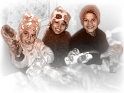

Home Makeover
We partnered with an international organization in conjunction with Romanian social workers to improve the home of one family in the village of Budila. In Fall 2006, new materials were purchased and work was carried out. The renovation has provided this family with a healthier and more stable environment in which they can live.
Brasov Children’s Hospital Project
Over crowded hospitals and abandoned children, combined with a severe shortage of orphanages and foster care, has left a great number of Romanian children in need of help.
Club Penguin is helping one organization address this need through the Brasov Children’s Hospital Project. This undertaking will provide care for abandoned children and work toward reintegrating children with their families where possible.
Renovation on rooms in Brasov Children’s Hospital has begun, enabling this project to get underway. A team of social workers and caregivers are in place to help. Support for this project is given on an ongoing basis and adjusted as need arises.
Meal and Education Program
This project provides children who are having difficulty in school and combating malnutrition with extra help in several villages and towns.
Children are selected by the local school board, and given the opportunity to attend the program where they receive lunch, after class help, computer training and specialized one on one care.
Club Penguin provides continual support for this initiative and evaluates funding as need changes.
For more information about this project, please contact us at
|